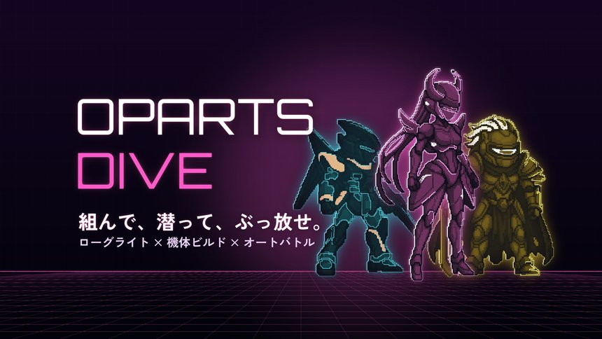
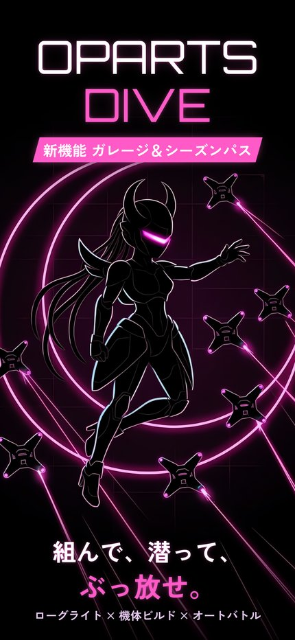
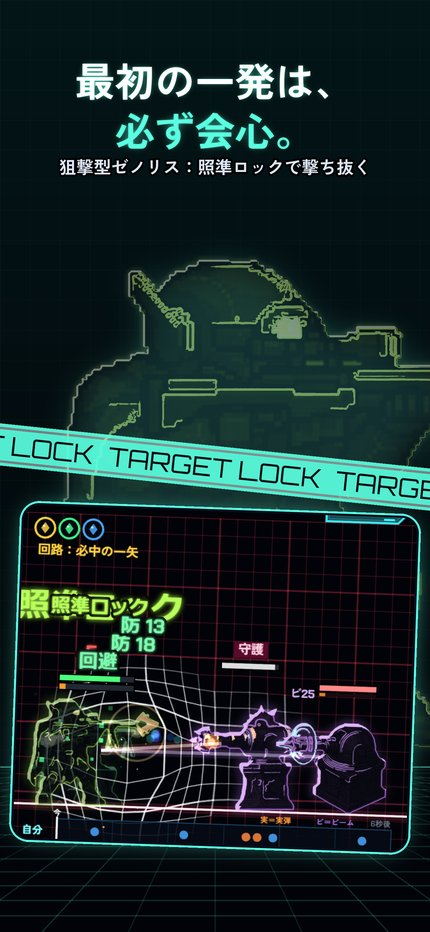
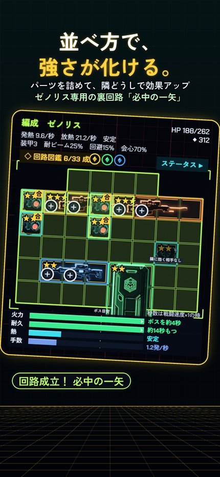
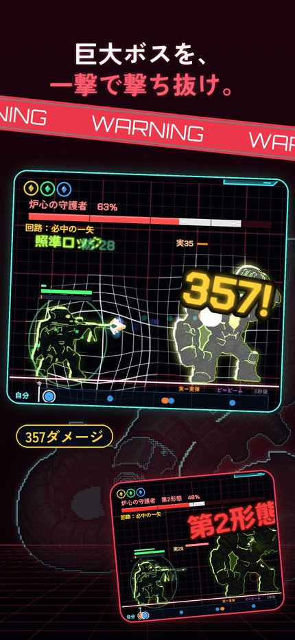
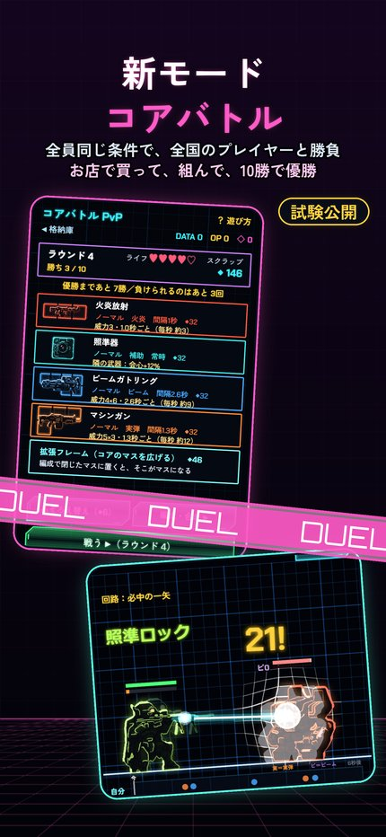
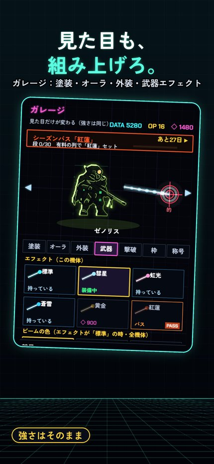
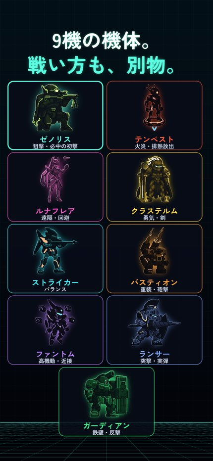

記事・動画でご紹介いただく時の素材と情報をまとめたページです。（最終更新：2026年11月16日）

素材をまとめてダウンロード（zip・約28MB） App Store で見る
| タイトル | OPARTS DIVE（オーパーツダイブ） |
|---|---|
| ジャンル | ロボット・ローグライト（機体ビルド × オートバトル） |
| 対応機種 | iPhone（iOS） |
| 価格 | 基本無料（アプリ内課金あり。強さを買う課金はありません） |
| 配信開始 | 2026年10月 |
| 対応言語 | 日本語・英語 |
| 開発・販売 | ruby-yama（個人開発） |
| 実績 | App Store「ストラテジー」カテゴリ 最高74位（2026年11月・日本） |
| App Store | https://apps.apple.com/jp/app/id6824476093 |
| 公式サイト | https://ruby-yama.github.io/oparts-dive/ |
| 権利表記 | © 2026 ruby-yama |
古代遺跡に眠るオーパーツを求めて、ロボットで地下へ潜るローグライトです。プレイヤーがするのは「機体を組むこと」だけ。形の決まったマス目のコアに、ビーム砲・ミサイル・シールド・冷却チップなど形の違う部品を詰め込みます。戦闘は自動で進み、組んだ機体の強さがそのまま結果になります。
隣に置くと効く部品や、決まった並びで発動する「回路」があり、同じ部品でも並べ方ひとつで強さがまるで変わります。縦画面・片手で遊べ、1回の潜行は数分〜十数分です。

表紙
戦闘（狙撃型ゼノリス）
編成（回路の成立）
ボス戦
対人戦 コアバトル
ガレージ
9機の機体ruby-yama：YouTube でロボット作品の解説チャンネルなどを運営する個人開発者です。「強さを売らず、組み方と腕前で勝負できるロボットゲーム」を目指して、1人で開発しています。
取材・追加の素材のご依頼は、下のメールへお気軽にどうぞ。
ruby.yamamoto.ai@gmail.com（ruby-yama）
OPARTS DIVE is a mecha roguelite for iPhone by solo developer ruby-yama. Pack differently shaped parts into your mech's core grid, wire up hidden "circuits", and watch it fight on its own. Free to play, no pay-to-win. Available in English on the App Store. All images and the video on this page may be used freely for coverage; gameplay videos and streams may be monetized without permission.